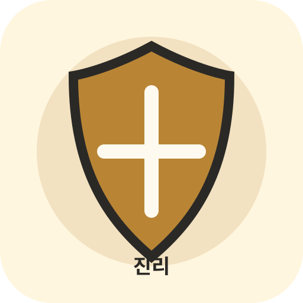
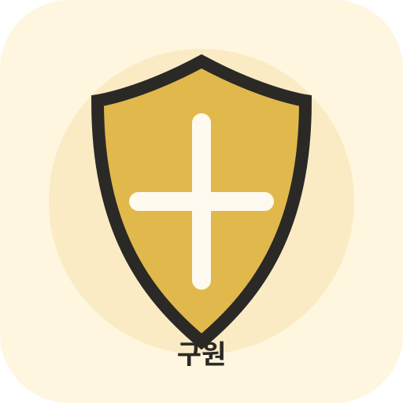

진리의 허리띠
에베소서 6:14
말과 상황을 하나님의 진리로 분별하도록 돕는 장비입니다.
획득: 진리 미션 완료
효과: 거짓 분별 미션에서 힌트 1개

에베소서 6:14
말과 상황을 하나님의 진리로 분별하도록 돕는 장비입니다.
획득: 진리 미션 완료
효과: 거짓 분별 미션에서 힌트 1개
에베소서 6:14
예수님의 의로 마음과 정체성을 지키는 장비입니다.
획득: 의 미션 완료
효과: 정체성 고백 미션에서 재도전 1회
에베소서 6:15
복음의 평안을 들고 움직이게 하는 장비입니다.
획득: 평안 미션 완료
효과: 전달/격려 미션에서 추가 달란트
에베소서 6:16
두려움과 의심을 믿음으로 막는 장비입니다.
획득: 믿음 미션 완료
효과: 시련의 숲 방해 1회 무효

에베소서 6:17
구원의 확신으로 생각을 지키는 장비입니다.
획득: 구원 미션 완료
효과: 보기 제거 또는 힌트 1개
에베소서 6:17
하나님의 말씀으로 선택하고 결단하게 하는 장비입니다.
획득: 말씀/결단 미션 완료
효과: 최종 미션에서 말씀 힌트 1개